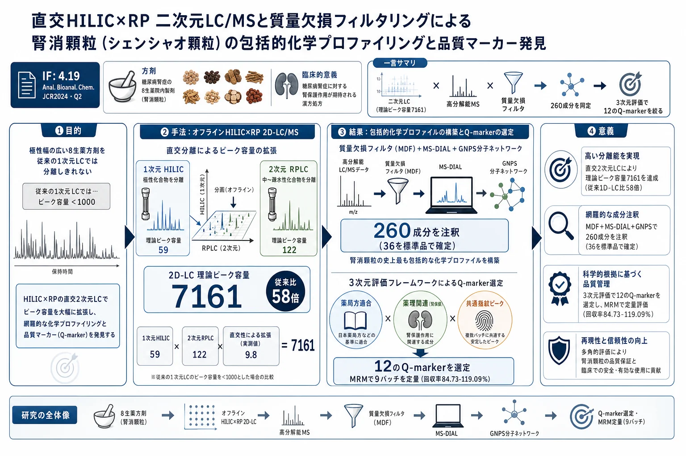

直交HILIC×RP 二次元LC/MSと質量欠損フィルタリングによる腎消顆粒（シェンシャオ顆粒）の包括的化学プロファイリングと品質マーカー発見

<!-- Gao et al., Anal. Bioanal. Chem. 2025, 417:6915-6931 の全訳密度日本語版。 複雑TCM方剤の2D-LC/MS品質管理の実験論文。researcher レベル（2D-LC・MDF・MSが中心）。 表1（MRMパラメータ）・主要数値を保持。260成分表（補足）・図は原文参照。 -->
書誌情報
- 標題（原題）: Comprehensive chemical profiling and quality marker discovery in Shenxiao granules via orthogonal HILIC×RP 2D-LC/MS and mass defect filtering algorithm
- 著者: Jian Gao, Jia Li（共同筆頭）, Jinyan Wang, Yang Wang, Dake Yang, Zixin Zhang, Zhifei Fu, Fengchao Wang, Liming Wang（責任著者）, Shiwei Chai（責任著者）, Lifeng Han（責任著者）
- 所属: 天津中医薬大学 成分中医薬国家重点実験室・天津市TCM化学分析重点実験室ほか
- 掲載誌・巻号・DOI: Analytical and Bioanalytical Chemistry, 2025, 417:6915–6931. DOI: 10.1007/s00216-025-06180-9
- インパクトファクター: 4.19（Analytical and Bioanalytical Chemistry, JCR 2024 / Clarivate。Q2）
- 受理経過: 2025年7月29日受領／9月12日改訂／10月4日受理／11月18日オンライン公開。© Springer-Verlag GmbH DE 2025
補足: 腎消顆粒（じんしょうかりゅう、Shenxiao granules, SXG）は糖尿病腎症の治療に20年以上臨床使用されてきた院内製剤で、菟絲子・酒製五味子・地黄・黄耆・炮製淫羊藿・蓮子・丹参・炮製車前子の8生薬から成る。本論文の技術的核心は、極性幅が極端に広い（高極性の糖・アミノ酸から低極性のリグナン・ジテルペンまで）8生薬方剤を、1次元LCでは分離しきれないという難問を、直交する二次元LC（HILIC×RP） で解決した点。ピーク容量を従来の58倍（7161）に拡張し、質量欠損フィルタ（MDF）と分子ネットワークで260成分を同定した。複雑TCM方剤のQC手法の到達点を示す一本。researcherレベル（2D-LC・MDF・高分解能MSが中心）。本文にツムラ（Tsumura And Co.）のダウンロード記録はないが天津中医薬大学の最新研究。
要旨（Abstract）
腎消顆粒（SXG）は中国で糖尿病腎症の治療に臨床使用される有効なTCMだが、複雑な多生薬組成と生物活性成分の広い極性範囲のため品質管理にいくつかの課題がある。これに対処するため、オフライン直交HILIC×RP 二次元液体クロマトグラフィー（理論ピーク容量7161）・高分解能四重極飛行時間質量分析・質量欠損フィルタリング（MDF）ベースのデータ取得アルゴリズムを統合した新規で包括的な分析プラットフォームを開発した。
この戦略により260化合物の系統的特性評価が可能になり、うち36は標準品で確認され、SXGのこれまでで最も包括的な化学プロファイルを表す。さらに、薬局方適合・腎保護への薬理学的関連・共通指紋ピークを包含する3次元評価枠組みで12の重要品質マーカー（Q-marker）を同定した。厳密なバリデーションが方法の堅牢性を実証（精度のRSD<5%、LOD 0.02〜6.56 ng/mL、回収率84〜119%）。結論として、確立した「多次元分離-計算的注釈-階層的Q-markerスクリーニング」アプローチは、SXGの包括的化学プロファイリングとQ-marker発見を提供するだけでなく、複雑TCM製剤の品質標準化の優れた設計図を提供する。
キーワード: 腎消顆粒、LC-MS、質量欠損フィルタリング、オフライン二次元クロマトグラフィー
序論（Introduction）
糖尿病腎症（DN）は糖尿病の重要な微小血管合併症で、世界の糖尿病患者の約40%が罹患。うち20〜30%が末期腎不全（ESRD）に進行し、DNは世界の腎不全の主因。現行の薬物治療は主に血糖・高血圧管理とレニン-アンジオテンシン-アルドステロン系（RAAS）阻害に焦点を当てる。ACE阻害薬・ARBは腎障害を減らせるが、長期使用は高カリウム血症・腎機能低下加速などの重篤な副作用を招きうる。重要なのは、これら治療が糸球体硬化・間質線維化などの根底の病理過程に対処しないこと。したがってDNの発症機序を変えうる新規多標的治療戦略の発見が急務。
TCMは全体論的アプローチと複数成分・標的・経路の相乗機構により、糸球体過剰濾過改善・酸化ストレス阻害・免疫微小環境調節で顕著な利点を示す。腎消顆粒（SXG）は20年以上臨床適用されてきた広く使われる院内製剤で、8生薬（菟絲子CS・酒製五味子SCF・地黄RR・黄耆AR・炮製淫羊藿EF・蓮子NS・丹参SMRR・炮製車前子PS）から成る。伝統的治療原理に基づき設計され、補腎・固精・活血・化瘀・清湿の相乗効果を発揮。多生薬製剤の複雑さのためSXG自体の包括的特性評価はまだ系統的に報告されていないが、個々の成分の薬理活性・化学成分は広く文書化され治療効果の根拠を提供。例えばARはフラボノイド（カリコシン・フォルモノネチン）とサポニン（アストラガロシドIV）に富み抗炎症・抗酸化ストレス作用。SMRRはフェノール酸（サルビアノール酸B）とジテルペノイドキノン（タンシノンIIA）に富み腎微小循環改善・線維化改善。RR・PSはイリドイド・フェネチルアルコール配糖体で免疫調節、SCFはリグナン（シザンドリン）で肝腎保護・抗酸化。SXGの推定治療効果はこれら多様な生物活性化合物の相乗結果と考えられる。しかしSXGは極性プロファイルが著しく異なる多様な成分を含み品質管理が極めて困難。
クロマトグラフィー技術・分析法の進歩にもかかわらず、TCM製剤の現行品質管理は主に限られた数のマーカー化合物の定量に依存。多成分分析やクロマト指紋を採用した製剤もあるが、薬理関連・品質一貫性・製造堅牢性を統合する体系的Q-marker枠組みを欠くことが多い。従来の1次元LC（1D-LC）はピーク容量が限られ（通常<1000）、TCM製剤の多数の活性成分（特に高極性・低存在量）の効果的分離が困難。対照的に、二次元LC（2D-LC）は親水性相互作用クロマト＋逆相（HILIC×RP）などの直交分離モードでピーク容量を大幅に高め（理論的にn1×n2）、複雑試料分析の強力なツールとなる。しかし包括的特性評価への完全実装には大幅な方法カスタマイズが必要。堅牢な品質管理系には、最適化された多次元分離・高度な計算的同定・体系的Q-marker選択枠組み（規制適合・治療関連・クロマト代表性を統合）が必要。
これらに対処するため、本研究はSXGの品質管理に焦点を当て、多次元分離と計算支援同定を組み合わせた統合戦略を開発。オフラインHILIC×RP 2D-LC＋Q-TOF-MSを確立し260化合物を系統的同定。薬局方適合・薬理関連・共通指紋ピークを統合する3次元Q-marker選択枠組みで12の主要Q-markerを同定。
材料と方法（Materials and methods）
試薬・材料
12参照化合物（クロロゲン酸・ゲニポシド酸・シザンドリン・カリコシン-7-O-β-D-グルコシド・ヒペロシド・イカリイン・ネフェリン・レーマンニオシドD・サルビアノール酸B・ベルバスコシド・ケルセチン・リエンシニン、いずれも純度≥98%）と内部標準（IS）の7-エトキシクマリンを使用。9バッチのSXGを天津西青区中医医院が提供。8生薬は安徽協和成・安国普天和から入手し、Lijuan Zhang教授が鑑定。ISの7-エトキシクマリンは正負両モードで安定なイオン化・中程度の極性・保持時間7.90分（多くのアナライトに近い）でマトリックス効果・機器変動補正に選択。
試料調製
定性分析用: SXG粉末70 mgに超純水1 mLを加え室温30分浸漬、2分ボルテックス、40分超音波（500 W, 40 kHz）、13,200×gで20分遠心、0.22 μm濾過。指紋分析用: 8構成生薬を各バッチ、粉砕生薬5.0 gに超純水20 mLで室温30分浸漬・40分超音波抽出。定量分析用: 各9バッチ、粉末50.0 mgにIS 50 μL（50 μg/mL）＋超純水4.95 mLを加え同手順で処理し、Waters Xevo TQ-S三連四重極で定量。最終最適化前処理は超純水で30分超音波抽出。
2D-LCシステムの構築
HILICとRPLCを組み合わせたオフライン2D-LCで直交分離を達成。
1次元（HILIC）: Waters e2695 HPLC、Acchrom XAmideカラム（4.6×150 mm, 3.5 μm, 25℃）。移動相 10 mM酢酸アンモニウム水(A)・アセトニトリル(B)、流速1.0 mL/min。勾配: 0–5分 95→90%B；5–10分 90→82%B；10–20分 82→67%B；20–29分 67→50%B；29–30分 50%B；30–31分 50→95%B；31–40分 95%B再平衡。254 nmで監視。保持時間で5分間隔6画分（Fr.1–Fr.6）に分割し広い極性範囲をカバー。カラム過負荷回避のためSXG溶液（70 mg/mL）10 μLを20並行ラン注入。同一保持窓の画分をプール・窒素乾固・50%メタノール200 μL再溶解し2次元RPLCへ。
2次元（RPLC）: Agilent Infinity II UHPLC＋Agilent 6546 Q-TOF高分解能MS。ACQUITY HSS T3カラム（2.1×100 mm, 1.8 μm, 40℃）。移動相 0.1%ギ酸水(A)・アセトニトリル(B)、勾配: 0–3分 2%B；3–18分 2→50%B；18–24分 50→85%B；24–26分 85→100%B；26–28分 100%B；28–28.5分 100→5%B；28.5–30分 5%B再平衡。流速0.3 mL/min、注入量3 μL。マルチモードイオン源（ESI/APCI）正負切替、ガス温度350℃、キャピラリー電圧±3.5 kV、フラグメンタ110 V、CID段階エネルギー（10/20/30 V）、スキャン範囲m/z 50–1250、auto MS/MS。
質量欠損フィルタリング（MDF）解析
段階的戦略で成分同定: (1) MS-DIAL（v4.9）で予備同定（ReSpect・MassBank利用、質量誤差<5 ppm・MS/MS類似度>80%）してプロトタイプライブラリ構築。(2) プロトタイプの質量欠損値（[(精密質量−公称質量)×10⁶]）で20 mDa許容の多角形MDF窓を生成——フラボノイド・有機酸など構造関連化合物群を濃縮。(3) 精緻化2次元LC-MSデータをMS-DIALで包括同定（最小ピーク高3000、同定スコア>80%）。並行してGNPS分子ネットワーク（前駆イオン±0.02 Da、フラグメント0.2 Da、共有フラグメント2以上）。MDF誘導＋ネットワークで注釈カバレッジを高め微量成分発見を促進。
定量分析（UPLC-MS/MS）
Waters ACQUITY H-Class UPLC＋Xevo TQ-S三連四重極、MRMモード。ACQUITY Premier HSS T3（2.1×100 mm, 1.8 μm）。移動相 0.1%ギ酸水・アセトニトリル。ICHガイドラインに従いバリデーション。
Table 1. UPLC-MS/MS定量のMRMパラメータ（12 Q-marker＋IS、抜粋）
| 分析種 | RT(分) | 前駆イオン→生成イオン(m/z) | CE(V) | イオン |
|---|---|---|---|---|
| レーマンニオシドD | 2.43 | 730.81→262.93 | 24 | [M+H]+ |
| クロロゲン酸 | 4.13 | 354.94→162.97 | 10 | [M+H]+ |
| リエンシニン | 4.15 | 611.70→206.20 | 28 | [M-H]− |
| ネフェリン | 4.46 | 625.40→206.00 | 32 | [M+H]+ |
| ベルバスコシド | 4.75 | 623.10→161.12 | 40 | [M-H]− |
| カリコシン-7-O-β-D-グルコシド | 4.76 | 446.90→284.92 | 14 | [M+H]+ |
| ヒペロシド | 4.83 | 464.68→302.88 | 10 | [M+H]+ |
| イカリイン | 5.70 | 677.01→530.84 | 14 | [M+H]+ |
| ケルセチン | 6.04 | 300.88→151.07 | 22 | [M-H]− |
| サルビアノール酸B | 6.20 | 717.05→519.14 | 18 | [M-H]− |
| シザンドリン | 7.54 | 432.93→383.93 | 20 | [M+H]+ |
| ゲニポシド酸 | 7.64 | 376.05→57.13 | 42 | [M+H]+ |
| 7-エトキシクマリン(IS) | 7.90 | 191.09→163.13 | 12 | [M+H]+ |
結果と考察（Results and discussion）
直交固定相・条件の選択と直交性評価
2次元カラムにHSS T3（RP）を選択。1次元は極性ベース分離を優先し、3 HILICカラム（BEH Amide・XBridge Amide・Acchrom XAmide）を16代表化合物で比較。HILICとHSS T3の相対保持時間の線形回帰で、Acchrom XAmideが最も低い相関＝最も高い直交性（R²=0.25）。独立成分分析（ICA）でも確認（保持時間行列を2つの統計的独立成分に分解、低いPearson相関）。
ピーク容量: 1次元・2次元それぞれ30分・28分の分析で、ピーク容量59（1D）・122（2D）、理論2Dピーク容量7161。従来1D-LCと比べ58倍の分離容量増加で、化学的に多様なSXG成分の分離を大幅に高めた。
260成分の包括的特性評価
MDF支援フィルタ＋直交2D分離が低存在量成分のS/Nを高め、高存在量成分によるイオン抑制を軽減。MS-DIALで250化合物同定（135は高品質MS/MS類似度で推定同定）、GNPS分子ネットワークで構造クラスタリング・補完注釈。計260化合物を注釈（36を標準品で確定）——SXGのこれまでで最も包括的な化学プロファイル。
バリデーション（2D-LC/Q-TOF-MS）
日内・日間精度を両次元で評価。1次元HPLC-UVで5代表アナライト（短期再現性・長期安定性良好）。2次元UHPLC-Q-TOF-MSで日内精度1.80〜3.84%、日間RSD 2.16〜4.16%——日・機器間で一貫。
指紋分析によるQ-markerスクリーニング
SXGは国家薬局方に公式品質評価基準を欠く院内製剤のため、各生薬の特徴指紋と腎症治療に有効と報告された生物活性化合物に基づく品質管理系を確立。3次元評価枠組みでQ-markerを選定: ①薬局方指定参照化合物（バッチ間一貫性確保）、②腎保護効果が実証された生物活性成分（薬理関連）、③バッチ間共通指紋ピーク（クロマト代表性）。
12のQ-marker: 薬局方系——クロロゲン酸（菟絲子由来、抗炎症・抗酸化・免疫調節で腎間質線維化改善）・シザンドリン（酒製五味子）・サルビアノール酸B（丹参、腎間質線維化阻害・血管内皮保護）・ゲニポシド酸（車前子、アクアポリン発現調節・腎浮腫緩和）ほか。薬理系——ケルセチン・ヒペロシド（菟絲子、メサンギウム細胞増殖抑制）ほか。この統合選択が、薬局方マーカーで個々の生薬の一貫品質を保証しつつ、広く検証された活性成分で腎線維化・酸化ストレス・免疫異常などの重要病理過程の多標的調節を強化。
12 Q-markerの定量
最適条件下で12 Q-markerとISが優れた特異性・感度・直線性・精度・正確性・安定性。回収率84.73〜119.09%、RSD 0.93〜4.66%、LOD 0.02〜6.56 ng/mL。9バッチをMRM定量（Table 2）。大半の主要成分（クロロゲン酸・ゲニポシド酸・カリコシン-7-O-β-D-グルコシド・ヒペロシド・イカリイン・ネフェリン・レーマンニオシドD等）の濃度をバッチ間で測定。
結論
確立した「多次元分離-計算的注釈-階層的Q-markerスクリーニング」アプローチは、SXGの包括的化学プロファイリング（260成分）とQ-marker発見（12成分）を提供し、複雑TCM製剤の品質標準化の優れた設計図を提供する。SXGの標準化・品質保証の基盤を築くとともに、TCM製剤研究の現代分析法開発の参照となる。
訳者補足
- なぜ二次元LC（2D-LC）なのか: 腎消顆粒は8生薬から成り、成分の極性が「糖・アミノ酸（超親水性）〜リグナン・ジテルペン（疎水性）」と極端に広い。1次元のHPLC（ピーク容量<1000）では、これらを1本のカラムで分けきれず、多くのピークが重なる。HILIC（親水性成分を分ける）×RP（疎水性成分を分ける）という原理の違う2本を直交させることで、理論ピーク容量が7161（1D比58倍）に跳ね上がり、260成分もの分離・同定が可能になった。「直交性（orthogonality）」＝2本のカラムが独立に分けること、が鍵で、本研究はR²=0.25とICAで直交性を定量的に確認している。
- 質量欠損フィルタ（MDF）とは: 化合物の精密質量と整数質量の差（質量欠損）は、構造が似た化合物群（フラボノイドなら似た値）で近い範囲に収まる。この性質を使い「フラボノイドらしい質量欠損の範囲」だけを窓で切り出すことで、狙った化合物クラスを効率よく拾い、ノイズや無関係なピークを除ける。GNPS分子ネットワーク（MS/MSの断片が似た化合物を線でつなぐ）と組み合わせ、微量成分まで漏らさず注釈した。
- Q-marker選定の「3次元枠組み」: 単に量が多い成分でなく、①薬局方に載っている参照成分（規制適合・バッチ管理）②腎保護に効くと実証された成分（薬理的に意味がある）③全バッチに共通して出るピーク（クロマトの代表性）——の3条件を統合して12成分を選んだ。院内製剤で公式基準がないSXGに、科学的根拠のある品質基準を与えた点が実務的価値。日本の院内製剤や自家製剤の品質標準化にも通じる考え方。
- 腎消顆粒（SXG）とは: 糖尿病腎症（糖尿病の腎合併症）の治療に20年以上使われる院内製剤。菟絲子・五味子・地黄・黄耆・淫羊藿・蓮子・丹参・車前子の8生薬で、補腎・活血・化瘀の働き。糖尿病腎症は世界の腎不全の主因で、既存薬（ACE阻害薬・ARB）が病理そのものを止められない中、多成分・多標的のTCMに期待が寄せられている。
- 260成分の完全リスト・9バッチ定量全データ（Table 2, 補足Table S1-S11）・図（Fig.1-6：BPC・直交性・分子ネットワーク・指紋・EIC）は原文・補足資料を参照。